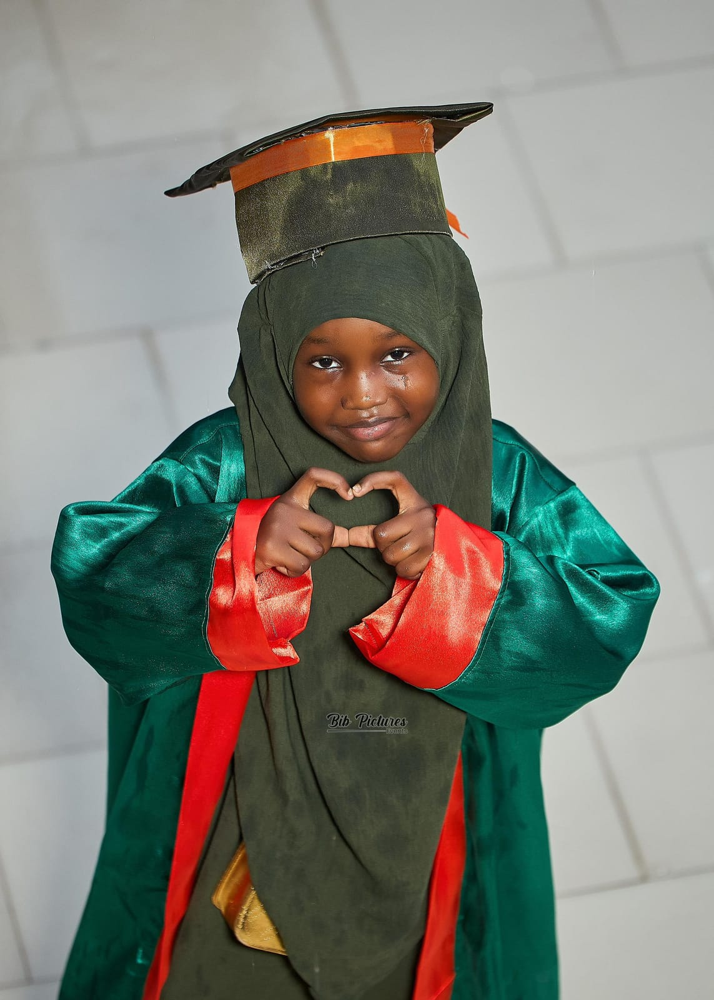

Programmes
Trois piliers pour une éducation complète
À Keur Yaye Sokhna Gueye Bilingual School, chaque enfant bénéficie d’un enseignement structuré en Français, en Anglais et en Coran — de la crèche jusqu’au CM2.
Français
Le socle académique — lecture, écriture, maths, sciences et expression orale.
Coran & Tahfiz
Mémorisation, tajwid et éducation islamique au cœur du projet éducatif.
Anglais
Immersion quotidienne dès la crèche pour une maîtrise naturelle et durable.
Programme 01
Programme Français
Crèche – CM2Le programme français est le socle académique de l’école. Il suit les référentiels officiels de l’éducation nationale tout en intégrant une pédagogie active, bienveillante et centrée sur la compréhension réelle de chaque élève, de la crèche jusqu’au CM2.
Dès les premières années, les enfants sont initiés à l’oral, à l’écoute et à l’expression à travers des activités ludiques, des histoires et des ateliers en groupe. Au fil des niveaux, l’accent est mis sur la lecture, la rédaction, le raisonnement logique et l’autonomie intellectuelle.
- Lecture, écriture et expression orale dès la maternelle.
- Mathématiques : numération, calcul, géométrie et résolution de problèmes.
- Sciences de la vie, histoire-géographie et découverte du monde.
- Ateliers de production écrite et lecture partagée en classe.
- Suivi individualisé et évaluations régulières pour accompagner chaque élève.
- Classes à effectifs réduits pour un meilleur encadrement et une attention personnalisée.
- Communication régulière avec les parents sur les progrès et les besoins de l’enfant.

Programme 02
Programme Anglais
BilingueL’anglais est enseigné quotidiennement dans toutes les sections, de la crèche au CM2, par des enseignants spécialisés dans l’enseignement de la langue à de jeunes apprenants. L’objectif est de construire une compétence solide et naturelle dans la langue, en favorisant l’immersion progressive plutôt que la mémorisation mécanique.
Les séances sont conçues pour être vivantes et interactives : chants, jeux de rôle, dialogues, lectures et activités orales permettent à l’enfant de s’approprier la langue dans des contextes concrets et motivants.
- Exposition quotidienne à l’anglais dès la crèche et la maternelle.
- Apprentissage du vocabulaire, des structures de phrase et de la phonétique.
- Activités orales : conversations, chants, jeux de rôle et présentations.
- Lecture et compréhension de textes adaptés à chaque niveau.
- Introduction à l’écriture en anglais dès le préscolaire.
- Progression structurée jusqu’à une maîtrise intermédiaire solide en fin de primaire.
- Environnement de classe immersif favorisant la confiance à l’oral.

Programme 03
Programme Coran & Tahfiz
Éducation islamiqueLe programme coranique est au cœur du projet éducatif de Keur Yaye Sokhna Gueye Bilingual School. Il vise à accompagner chaque enfant dans la mémorisation progressive du Coran, dans le respect du tajwid, et dans l’intégration des valeurs islamiques au quotidien.
Au-delà de la mémorisation, le programme intègre une éducation islamique complète : apprentissage des piliers de l’islam, des invocations quotidiennes, de l’adab et des valeurs de respect, de solidarité et de bienveillance envers autrui.